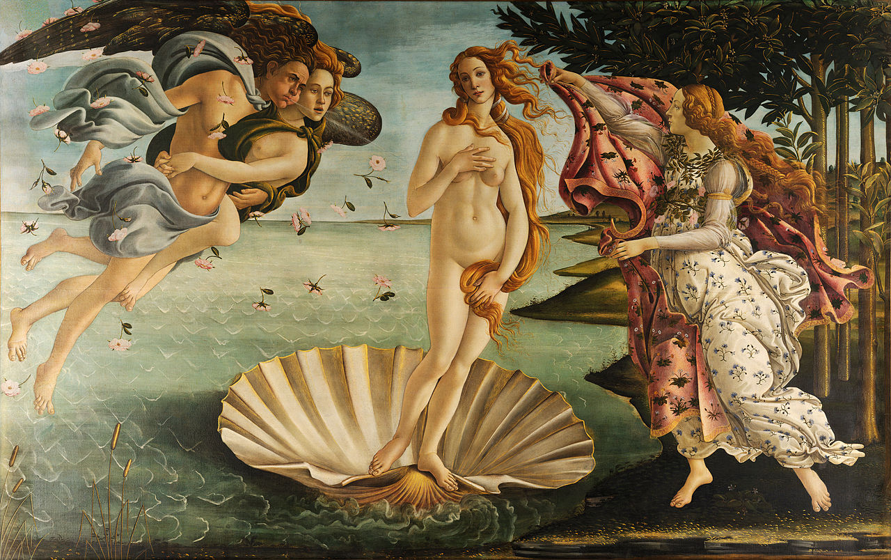

Introduction
Welcome to the wonderful world of shells! Although here at Lawrence we may not be close to an ocean, that doesn’t mean we shouldn’t learn about these neat specimens.
Although these shells are all dead, seashells are built by and lived in by marine mollusks, which are a lot like snails. Mollusks are very important to humans - not only are they a delicious food consumed by many people across the globe (steamed mussels or fresh oysters anyone?) They are also food for fish which humans consume in large quantities. In fact, 1 in 7 people rely on seafood as their primary source of protein. In addition to being used for food, seashells are broken down by the waves into sand that makes our beaches and underwater habitat. Without them, the food webs of many freshwater and marine ecosystems would be thrown off.
The future is not looking great for these shells, though. As the temperature of the earth rises, ocean temperature and acidity are also rising. This is gravely changing the habitat that these shells live in and threatening to affect every stage of their life cycle, reducing the amount of shells that will be fertilized, hatch and reach adulthood. It will also likely reduce their shell size and strength, and some studies have even shown climate change will affect their behavior causing them to walk in circles when attempting to hunt for prey.
jaxshells.org
All of these shells were donated by Ann Schneider, a friend of Lawrence (and supplemented by a few from my own collection).
In this display, each case of shells correlates to a category of information. Knowledge is the first step in preserving our ecosystems, so dive in and explore this these amazing creatures from the comfort of Appleton.
(Tap to continue)
Color
Just because shells are of the same species doesn’t mean they have to look alike! Each of the rows in this case represents a different family of shell. The first row of shells all belong to the family Naticidae or moon snails. The second and third rows are made up of snails from the family Conidae or cone snails and the final row is made up of shells from the family Volutidae or volute shells.
It is hard to judge exactly the purpose that colors serve for each shell, but there are a lot of hypotheses.
Shells can use color as camouflage for their environments. However, brightly colored shells use their color as a warning to predators that they could be poisonous.
Some species, like Donax variabilis shown below, purposely look different to confuse their predators. If they are all different colors, their predators don’t have a consistent image of what they look like.
http://www.iloveshelling.com/blog/category/seashells/coquina/Predation
What does a shell spend its time doing underwater? Well, it has to eat just like the rest of us. Gastropods can be scavengers, browsers, grazers, suspension feeders and often, vicious predators. This display shows some mollusks that have fallen victim to their own kind.
All the shells in this case are moon snails that have been devoured by their own species. See that hole in their shell? That hole, called a countersunk hole, is a sure sign of moon shell predation. Once they have made the hole they insert a proboscis into the shell to consume their prey.
One of the first scientists to research shell predation was Geerat Vermeij, now a professor at UC Davis. Blind since the age of three, Vermeij made his discoveries of predation through his sense of touch.
Math
Have you noticed that all the shells in this display have the same twisting shape? So did Sir D’Arcy Wentworth Thompson, a Scottish scientist who wrote the famous book “On Growth and Form” in 1917 to attempt and explain many of the classic shapes we see in nature.
In the 1960s, with the invention of the computer, a scientist named David Raup was able to expand upon Thompson’s rules and create a computer model of all the possible shell shapes in the world. He was able to do so by increasing or decreasing three properties of a shell, the height (which he called Translation or T), the whorl size (or expansion rate, W), and the distance of the curve from the axis (D).
Texture
The shell adds its texture (spines, scales, tubercles, and ridges) at the lip as it grows. In other words, it does not go back and add texture to the already smooth parts of the shell. These spines have a function not uncommon in the animal world, avoiding predation. Having a thick, tough shell is the sure way to make it difficult to be cracked open by a claw, but building spines around the shell is a lot more economical for the shell and still makes it difficult to be handled by predators.
Like color and pattern, you are more likely to find a diverse array of textures in very productive habitats where predation and competition are more extreme. For this reason, these unique murex shells are native to the tropical waters of the indo-pacific ocean.
Life Cycle
Much like the rings of a tree trunk, a shell’s age can be determined by its size. As you can see from these two cases of horse conchs, even the largest of shells starts out as a tiny version of itself. Gastropods are born with their shell, which they add onto continually throughout their life. They add material onto the lip of the shell, building it around in a spiral to accommodate for their growing body. If you look at the tip of the big horse conch you can see it resembles the smallest of shells.
Shell Pattern
One of people’s favorite parts about shells is their brilliant array of patterns. Looking at this case of cowrie shells, you might be surprised that all the shells are members of the same family, Cypreaidae, given their huge range of patterns. How exactly do these snails create such marvels? Let’s take a look at what the snail would look like when they’re alive:
http://wildfilms.blogspot.com/2008/07/another-first-record-for-cyrene-reef.htmlHere’s our snail! See that fleshy part of the body overlapping the shell on the outside? That’s called the mantle. The mantle is responsible for making the shell bigger by adding on material to the lip of the shell. As it does this, it deposits pigments in a pattern unique to their species.
Continued on next page...
Shell Pattern
http://invertebrates.si.edu/Features/stories/cowrie.htmlIf the mantle deposits pigment continuously, lines will form. If it deposits pigments in fragments, spots will form. Look at the array of patterns seen in this case and think about how they were formed. Pretty cool right?
No one knows exactly what service pattern serves for the shell, but a popular hypothesis out there is that of Ermentrout and Oster who hypothesize that the distribution of color compounds by the mantle is controlled by the snail’s neurons. The pigment cues the shell as to where the mantle is so it can continue to lay down new materials and create the correct shape for the shell. In this way it acts as the shell’s constructive “memory.” They suggest that pattern has no effect on the snail evolutionarily, and is only a side-effect of the shell production.
Uses
Humans have used shells throughout history. Shells have been used as currency by a native culture on every continent except for Antarctica. In addition to currency, shells have been used as jewelry, tools, containers, religious symbols and much more. Here are a few examples of their most popular uses.
The first shell is a cowrie shell which was often used as currency in different cultures.
“Mother of Pearl” is the common name for the inside nacre coating of oysters. It was often used to make buttons and was responsible for starting a large button industry along the Ohio river in the early 1900s. The industry became less important as plastic buttons came into use.
Shells have often been displayed in art, like the marble cone shell displayed here which was featured in Rembrandt’s “De Schelp” or “The Snail” in 1650.
Look at the cone snail displayed and the one drawn by Rembrandt here: do you notice a difference?
 https://nl.wikipedia.org/wiki/Conus_Marmoreus
https://nl.wikipedia.org/wiki/Conus_Marmoreus
The shells open on different sides. It is incredibly rare for shells to open on the left or be “left-handed” as they are called by scientists. It is unknown as to whether Rembrandt made a mistake or made this change on purpose because he believed the shell to be more beautiful this way.
Continued on next page...
Uses
Another famous work is “The Birth of Venus” by Sandro Botticelli made in the 1480s. Venus is emerging from a scallop shell, a little bigger than the one seen in this display. Shells are often used as a symbol of fertility and the feminine physique because of their close association with the ocean and their unique shape.
 https://en.wikipedia.org/wiki/The_Birth_of_Venus#/media/File:Sandro_Botticelli_-_La_nascita_di_Venere_-_Google_Art_Project_-_edited.jpg
Sources
- Allen, T. R. (2012). The effects of ocean acidification and sea surface warming on the embryonic development of the opisthobranch gastropod Stylocheilus striatus. Undergraduate Publication. Retrieved February 20, 2017, from http://escholarship.org/uc/item/3977m4tq
- Asnaghi, V., Chiantore, M., Mangialajo, L., Gazeau, F., Francour, P., Alliouane, S., & Gattuso, J. (2013). Cascading Effects of Ocean Acidification in a Rocky Subtidal Community. PLoS ONE,8(4). doi:10.1371/journal.pone.0061978
- Bennett, J. (n.d.). Ocean Acidification. Retrieved February 20, 2017, from http://ocean.si.edu/ocean-acidification
- Bunje, P. (2003). The mollusca. Retrieved February 20, 2017, from http://www.ucmp.berkeley.edu/taxa/inverts/mollusca/mollusca.php
- Climate Change Indicators: Oceans. (2016, August 02). Retrieved February 21, 2017, from https://www.epa.gov/climate-indicators/oceans
- EPA. (2016, December 27). Future of Climate Change. Retrieved February 20, 2017, from https://www.epa.gov/climate-change-science/future-climate-change
- Feng, D., Li, Q., Yu, H., Zhao, X., & Kong, L. (2015). Comparative Transcriptome Analysis of the Pacific Oyster Crassostrea gigas Characterized by Shell Colors: Identification of Genetic Bases Potentially Involved in Pigmentation. PLoS ONE, 10(12).
- Global Aquaculture Market 2016-2020. (2016, September 22). Retrieved February 21, 2017, from http://www.technavio.com/report/global-general-retail-goods-and-services-global-aquaculture-market-2016-2020?utm_source=T4&utm_medium=BW&utm_content=Media
- Grand View Research, Inc. (2015, January 26). Aquaculture Market Expected To Be Worth $202.96 Billion By 2020. Retrieved February 21, 2017, from https://globenewswire.com/news-release/2015/01/26/699795/10116924/en/Aquaculture-Market-Expected-To-Be-Worth-202-96-Billion-By-2020-New-Report-By-Grand-View-Research-Inc.html
- Guo, X., Huang, M., Pu, F., You, W., & Ke, C. (2015). Effects of ocean acidification caused by rising CO2 on the early development of three mollusks. Aquatic Biology,23(2), 147-157. doi:10.3354/ab00615
- Havenhand, Jon N; Schlegel, Peter (2009): Seawater carbonate chemistry and biological processes during experiments with oyster Crassostrea gigas, 2009. doi:10.1594/PANGAEA.752267, Supplement to: Havenhand, JN; Schlegel, P (2009): Near-future levels of ocean acidification do not affect sperm motility and fertilization kinetics in the oyster Crassostrea gigas. Biogeosciences, 6(12), 3009-3015, doi:10.5194/bg-6-3009-2009
- Horne, F. (2006, October 19). How are seashells created? Or any other shell, such as a snail's or a turtle's? Retrieved February 20, 2017, from https://www.scientificamerican.com/article/how-are-seashells-created/
- Kennedy, C. (2010, November 3). Ocean Acidification, Today and in the Future | NOAA Climate.gov. Retrieved February 21, 2017, from https://www.climate.gov/news-features/featured-images/ocean-acidification-today-and-future
- Morton, B. (2011, February 11). Bivalve. Retrieved February 21, 2017, from https://www.britannica.com/animal/bivalve
- NCOSS Staff. (2014, June 11). Ocean Acidification Promotes Disruptive and Harmful Algal Blooms on Our Coasts. Retrieved February 21, 2017, from https://coastalscience.noaa.gov/news/climate/ocean-acidification-promotes-disruptive-and-harmful-algal-blooms-on-our-coasts/
- Nienhuis, S., Palmer, A. R., & Harley, C. D. (2010). Elevated CO2 affects shell dissolution rate but not calcification rate in a marine snail. Proceedings of the Royal Society B: Biological Sciences,277(1693), 2553-2558. doi:10.1098/rspb.2010.0206
- Nordsieck, R. (n.d.). Snails and Slugs (Gastropoda). Retrieved February 21, 2017, from http://www.molluscs.at/gastropoda/index.html?%2Fgastropoda%2Fmorphology%2Freproduction.html
- Ocean acidity over the past 25 million years and projected to 2100. (2011, January 13). Retrieved February 22, 2017, from http://www.eea.europa.eu/data-and-maps/figures/ocean-acidity-over-the-past
- Rafferty, J. P. (2015, November 20). Seashell. Retrieved February 20, 2017.
- Rafferty, J. P. (2017). Coral Bleaching. Retrieved February 21, 2017, from http://academic.eb.com/levels/collegiate/article/coral-bleaching/571337
- Rosenberg, G. (n.d.). COA :: Why Do Shells Have Their Colors? Retrieved February 20, 2017, from http://www.conchologistsofamerica.org/articles/y1997/9703_Rosenberg.asp
- Scales, Helen (2015). Spirals in Time. New York, New York: Bloomsbury Publishing Plc.
- Schlegel, P., Binet, M. T., Havenhand, J. N., Doyle, C. J., & Williamson, J. E. (2015). Ocean acidification impacts on sperm mitochondrial membrane potential bring sperm swimming behaviour near its tipping point. Journal of Experimental Biology,218(7), 1084-1090. doi:10.1242/jeb.114900
- Seashells. (n.d.). Retrieved February 20, 2017, from http://coastalcare.org/educate/seashells/
- Solem, G. A. (2015, March 20). Gastropod. Retrieved February 20, 2017, from https://www.britannica.com/animal/gastropod
- The Marble Cone. (n.d.). Retrieved February 20, 2017, from http://www.theconesnail.com/meet-the-snails/cone-snails/conus-marmoreus
- University of California - Berkeley. (2009, April 2). Mollusks Taste Memories To Build Shells. ScienceDaily. Retrieved May 8, 2017 from www.sciencedaily.com/releases/2009/04/090402092714.htm
- Vargas, C. A., Hoz, M. D., Aguilera, V., Martin, V. S., Manriquez, P. H., Navarro, J. M., . . . Lagos, N. A. (2013). CO2-driven ocean acidification reduces larval feeding efficiency and changes food selectivity in the mollusk Concholepas concholepas. Journal of Plankton Research,35(5), 1059-1068. doi:10.1093/plankt/fbt045
- Vermeij, G. J. (1997). Privileged hands: a scientific life. New York: W.H. Freeman.
- Watson, S., Fields, J. B., & Munday, P. L. (2017). Ocean acidification alters predator behaviour and reduces predation rate. Biology Letters,13(2), 20160797. doi:10.1098/rsbl.2016.0797
- Wilbur, K. M., & Saleuddin, A. M. (Eds.). (1983). The Molluska (Vol. 5). New York, New York: Academic Press.
- Williams, E. A., Craigie, A., Yeates, A., & Degnan, S. M. (2008). Articulated Coralline Algae of the Genus Amphiroa Are Highly Effective Natural Inducers of Settlement in the Tropical Abalone Haliotis asinina. The Biological Bulletin,215(1), 98-107. doi:10.2307/25470687